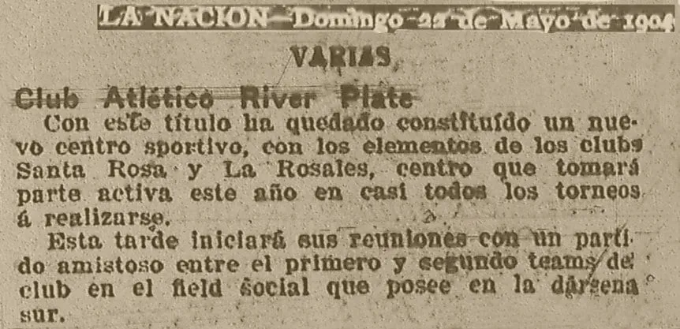
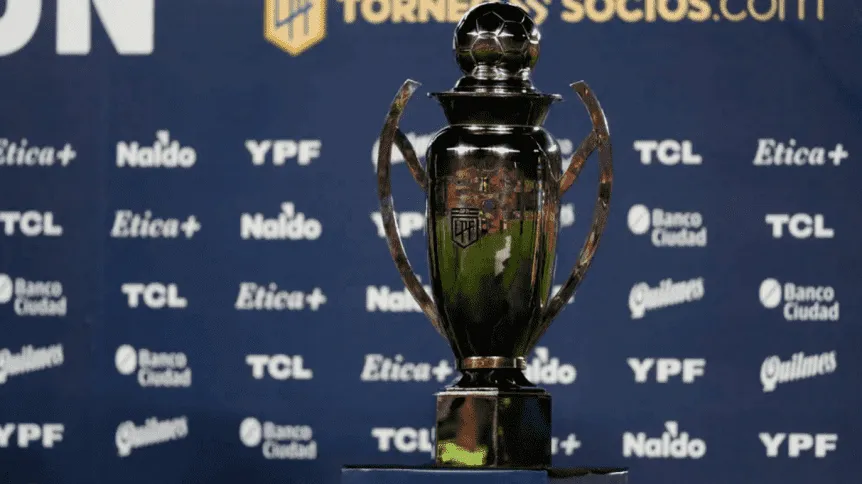
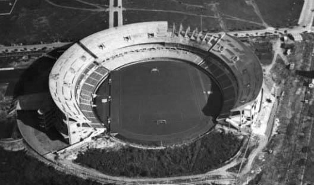
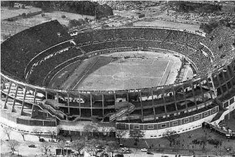
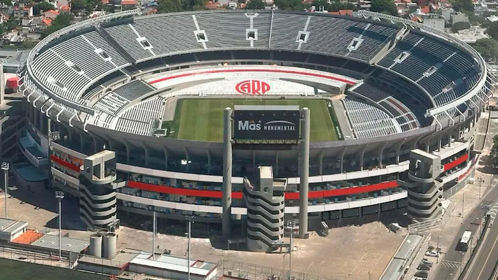

Historia del club
Fundación del club
El Club Atlético River Plate fue fundado el 25 de mayo de 1901 en el barrio de La Boca, en la ciudad de Buenos Aires. Su creación fue el resultado de la fusión de dos clubes barriales: Santa Rosa y La Rosales. El nombre "River Plate" fue tomado del inglés, una traducción de "Río de la Plata", que un socio vio escrito en unos containers en el puerto.
En sus primeros años, River tuvo su primera cancha en Dársena Sur y luego se mudó varias veces hasta establecerse en su histórico estadio Monumental, en el barrio de Núñez, en 1938. Con el tiempo, el club se convirtió en uno de los más grandes y exitosos del fútbol argentino y sudamericano.

Trofeos mas importantes
- Copa intercontinental (1986)
- Copa sudamericana (2014)
- Copa libertadores (2018)
River entre torneos y copas nacionales tiene un total de 54 titulos.

En el ambito internacional, suma un total de 18 trofeos a sus vitrinas.
Evolución del estadio "Monumental"
Luego de instalarse definitivamente en Nuñez en el año 1938, el estadio sufrio distintas modificaciones.
Gracias a la venta del jugador "Enrique Omar Sívori" se contruyo la tribuna que hoy en día lleva su nombre. Para el mundial de 1978 se termino de contruir la cancha como se la conocia antes de la ultima remodelación, con la cual el llamado "Estadio Más Monumental" se convirtio en el mas grande de america, pudiendo recibir mas de 85000 aficionados.
Año 1938

Año 1958

Año 2025
